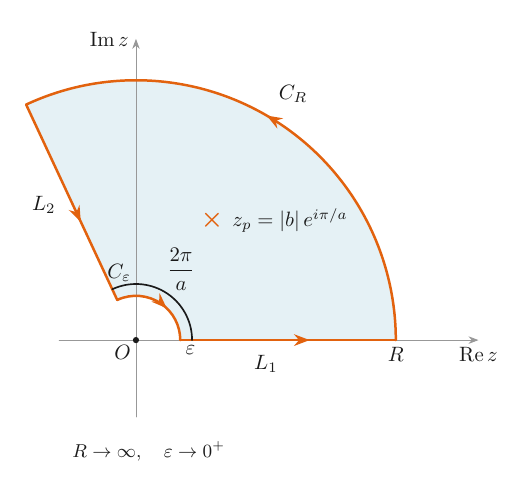
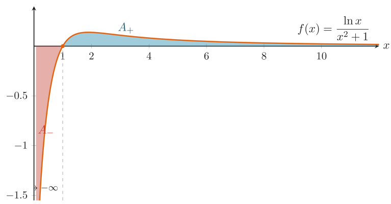

Have you ever looked at a seemingly impossible logarithmic integral and wondered if there's a clean, elegant way to solve it? Today, we are going to evaluate the following integral for $a > 1$:
$$I=\int_{0}^{\infty}\frac{\ln x}{x^{a}+|b|^{a}}dx$$Integrating logarithms directly can often force an awkward choice of branch cuts. Instead, we can use a highly efficient contour integration technique that leverages symmetry and a parametric family of integrals.
Setting Up the Contour
The denominator of our integrand gives us a massive hint. It points directly to a contour adapted to the symmetry of $x^{a}$. Under the transformation $z \mapsto z e^{2\pi i/a}$, the term $z^{a}$ maps back to $z^{a}$, leaving the entire denominator $z^{a}+|b|^{a}$ completely unchanged.
Because of this symmetry, we can integrate over a circular sector (a "wedge") with an opening angle of $2\pi/a$.

As seen in Figure 1, the contour traces an outgoing ray $L_{1}$ along the positive real axis $\mathbb{R}_{+}$, follows a large arc $C_{R}$, returns via a ray $L_{2}$ at angle $2\pi/a$, and closes via a small arc $C_{\epsilon}$ near the origin.
For this method to work, our wedge must enclose at least one pole. The zeros of our denominator occur at $z=|b|e^{i\pi(2k+1)/a}$. Exactly one of these zeros, $z_{p}=|b|e^{i\pi/a}$, lies perfectly inside our wedge.
The Parametric Workaround
Rather than wrangling the logarithm and its branch cuts directly, it is much cleaner to introduce a parametric family of integrals:
$$K(c)=\int_{0}^{\infty}\frac{x^{c}}{x^{a}+|b|^{a}}dx$$By applying the residue theorem to the function $z^{c}/(z^{a}+|b|^{a})$ over our sector, and taking the limits as $R \rightarrow \infty$ and $\epsilon \rightarrow 0$, we can find the closed-form solution for this family:
$$K(c)=\frac{\pi}{a}\frac{|b|^{c+1-a}}{\sin(\frac{\pi}{a}(c+1))}$$As a quick side note, setting $c=0$ elegantly gives us the standard integral:
$$\int_{0}^{\infty}\frac{dx}{x^{a}+|b|^{a}}=\frac{\pi}{a|b|^{a-1}\sin(\pi/a)}$$Recovering the Original Integral
Because the derivative of $x^{c}$ with respect to $c$ is exactly $\partial_{c}x^{c}=x^{c}\ln x$, we can recover our original target $I$ simply by differentiating $K(c)$ with respect to $c$ and setting $c=0$:
$$I=\frac{\partial K}{\partial c}\bigg|_{c=0}=\frac{\pi|b|^{1-a}}{a \sin(\pi/a)}\left[\ln|b|-\frac{\pi}{a}\cot\frac{\pi}{a}\right]$$A Beautiful Special Case: $a=2, b=1$
Let's plug some numbers in. If we set $a=2$ and $b=1$, every single term inside our bracket vanishes (since $\cot(\pi/2)=0$ and $\ln 1=0$). This means $I=0$.
Why does this happen visually? The integrand diverges to $-\infty$ as $x \rightarrow 0^{+}$, and it crosses the axis to vanish at $x=1$. If we make the substitution $x \mapsto 1/x$, the negative area lobe $A_{-}$ on the interval $(0, 1)$ perfectly maps onto the positive lobe $A_{+}$ on $(1, \infty)$ with the exact opposite sign, resulting in a perfect cancellation.
Here is the plot of $f(x) = \frac{\ln x}{x^2 + 1}$ showing the equal and opposite lobes:

The Power of Generalization
The best part about this trick is that it generalizes at practically no extra cost. By differentiating our function $K$ a total of $n$ times before evaluating at $c=0$, we immediately unlock the entire family of logarithmic moments:
$$\frac{\partial^{n}K}{\partial c^{n}}\bigg|_{c=0}=\int_{0}^{\infty}\frac{(\ln x)^{n}}{x^{a}+|b|^{a}}dx$$By solving one harder-looking parametric integral, we are handed the solutions to a whole class of integrals as mere derivatives.
Food for thought: What if we have $\ln(x+1)$ instead of $\ln x$ in the integrand? Let me know your thoughts in the comments!